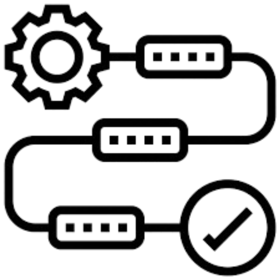

<!-- About Component -->
<section class="about" id="about-me">
  <div class="container">
    <div class="section-header">
      <h2 class="section-title">Sobre Mim</h2>
      <p class="section-subtitle">Conheça um pouco mais sobre minha jornada e expertise</p>
    </div>
    <div class="about-grid">
      <div class="about-card">
        <div class="card-icon">
          
        </div>
        <h3 class="card-title">Desenvolvimento Full Stack</h3>
        <p class="card-description">
          Sou um desenvolvedor apaixonado por tecnologia, com experiência sólida em desenvolvimento web completo. 
          Trabalho com as mais modernas tecnologias para criar aplicações robustas, escaláveis e com excelente experiência do usuário.
        </p>
      </div>
      <div class="about-card">
        <div class="card-icon">
          
        </div>
        <h3 class="card-title">Design & UX/UI</h3>
        <p class="card-description">
          Possuo expertise em design de interfaces e experiência do usuário, criando layouts intuitivos e visualmente atrativos. 
          Desenvolvo posts profissionais e apresentações animadas que comunicam efetivamente a mensagem desejada.
        </p>
      </div>
      <div class="about-card">
        <div class="card-icon">
          
        </div>
        <h3 class="card-title">Gestão & Metodologias Ágeis</h3>
        <p class="card-description">
          Experiência prática em gestão de pessoas e projetos, aplicando metodologias ágeis no dia a dia. 
          Busco constantemente novos conhecimentos e conexões para evoluir profissionalmente e contribuir para o sucesso das equipes.
        </p>
      </div>
    </div>
  </div>
</section>
